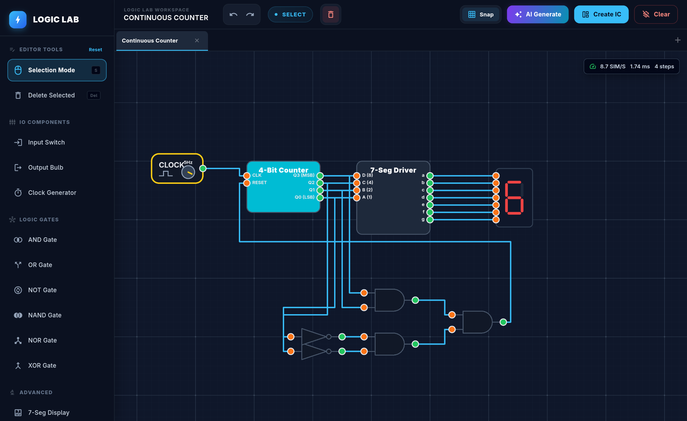

Build visually.
Think clearly.
Drag in switches, gates, clocks, and displays. Make connections directly on the canvas and watch ideas take shape.
VISUAL CIRCUIT EDITOR ↗From your first AND gate to complex digital systems. Design, connect, and simulate circuits in one beautifully simple workspace.

YOUR IDEAS. YOUR CIRCUITS. YOUR LAB.
All the tools to turn an idea into a working digital circuit — right on your screen.
Drag in switches, gates, clocks, and displays. Make connections directly on the canvas and watch ideas take shape.
VISUAL CIRCUIT EDITOR ↗Flip a switch, run a clock, follow the signal. See your circuit respond instantly.
Package your circuits into custom integrated components. Create once, use again and again.
Tell Gemini what you want to build and let AI help create the circuit. Optional, with your own API key.
Try preset circuits, switch between workspaces, and edit fearlessly with undo and redo.
Less setup, more experimenting. That’s the whole point.
Pick gates, inputs, clocks, and displays from the tool panel.
Draw wires between pins to bring your logic circuit together.
Toggle inputs or start a clock to see signals flow in real time.
Explore the building blocks of computing, test a tricky logic idea, or build something completely your own.
Digic Sim is a Flutter application for designing and simulating digital logic circuits with a visual editor.
Yes. Connect components, toggle input switches, and run clocks to observe the logic signals and outputs update.
No. The visual editor and simulation work independently. AI circuit generation is an optional feature that uses a Gemini API key you provide.
Yes. Digic Sim supports creating reusable integrated circuits (ICs) from your designs, along with multiple workspaces and preset circuits.
Your next circuit is just a few clicks away.